Shoutouts
Happy birthday to “The Finer things”. You’re high taste and love of Michelin star restaurants really impresses me as someone whose main exposure to the world of fancy has been getting bullied into buying various things by “The Philosopher” and “The Awepartment”.
Happy birthday to “The Foxy lady”. We haven’t known each other long but we have really vibed in the time we have. The camping trip was legendary and you’re a really fun person to play card games with.
Monday
Today when I was in the middle of my terminal tapping I happened to check instagram to find a story from a friend I hadn’t heard from in over 2 years. For some context this friend basically disappeared off the face of the earth and I hadn’t been able to get a hold of her since summer of 2024. It got to the point where I had a yearly ritual of texting her to see if she was alive only for the texts to not send.
When I saw her story I immediately messaged her again and she responded! She mentioned being burnt out and moving back home but now she’s starting grad school down in L.A. and she’s been enjoying it which makes me really happy to hear.
She was in a friend group with me, “The Professor,” “The Quant,” “The Taco,” and a few others so I sold her on joining “The Professor’s” monthly catchup calls. I really hope our whole group gets to catch up with her!
Once I finished terminal tapping I went to Mission Run Club with “Spaced out,” “Let me give you a call on the world’s smallest phone,” and “Hell yeah”. For once the bar we started at at had a bag drop which led to people wondering why I wasn’t running with my backpack for once. It was a nice change of pace although someone commented I ran slower than I usually do which was largely because I was having a nice chat with “Spaced out” and didn’t feel the need to go balls to the wall today.
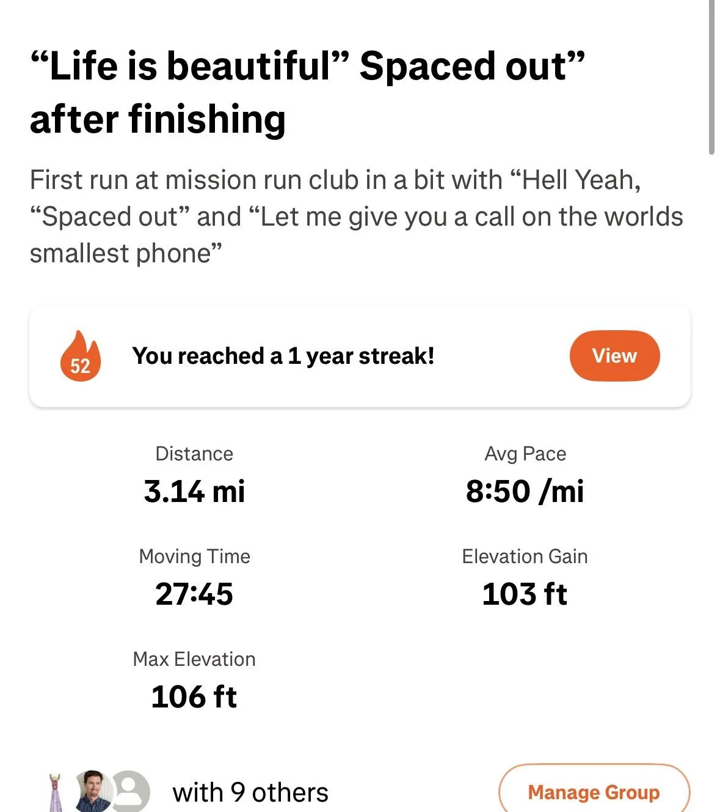
Today also marks my one year streak of posting a Strava activity every week which is neat!
After the run we were hanging out at a bar where I was talking with someone I’ve seen at the run a few times before and trash pickup for the first time yesterday. I mentioned this and she said I had infect seen her before at trash pickup. She then asked “What’s my name?” The air become still and adrenaline surged through me as I tried my hardest to remember this persons name. I said something and I turned out to be off the mark. What I said somewhat rhymed with the actual answer but wasn’t quite right. She gave me a disappointed look that I couldn’t help but find endearing and funny.
I asked her if she knew my name hoping to catch her off guard. She paused for about 7 seconds and I smiled slightly ready to call her out when she said “Humza” and my face deflated as my brow furrowed. Damn.
For the rest of the night I made it a point to say her name an excessive amount of times to ensure that I don’t forget it.
Tuesday
Once I finished my stint as token tyrant I went to go play Spikeball with “The Spikeballer,” “Aquaman,” “The French scout,” and “TBD” a guy who I met a few weeks ago and I really want to give a nickname for but couldn’t come up with one.
It was “TBD’s” birthday today so to celebrate his mom and sister came up from Burlingame with a birthday cake which was fun. I think this was the first time we had a whole family at spikeball.
Wednesday
Upon putting the code in the PR I went to Midnight runners with “The Quant”. I got some flack from some of the regulars for not showing up in a while which was expected.
I learned that it was the birthday of an acquaintance at Midnight Runners and she was organizing a whole birthday run with race bibs and everything which was a pretty fun touch. “The Quant” and I wound up bailing on the run a bit early when we encountered the aforementioned birthday girl and she really wanted us to continue the run with her. I felt a bit bad for saying no but I decided to follow “The Quant” instead since my time with him draws ever more to an end. Before leaving though she invited us to a bar called Paris 75 for the after party.
“Thr Quant” and I head out over to Chinatown which I realize is quite close to the bar she said. I head over there and wait for 40 minutes for them to come but unfortunately they don’t. I’m not close friends with this person and didn’t have her number so all I could do was bide my time and wait. Eventually I gave up and headed home but I’m still glad I tried though.
Thursday
Today during my stint as a Venture aligned stakeholder “The Philosopher” came for an onsite interview. I’m trying to get him to come work with me since he is interested in the kind of work I do. It was great having him here and showing him around the office and meeting more of the team.
The two of us made a deal that if he gets cooked during the interview I buy him dinner and if he cooks he buys me dinner. Well I’m proud to say that the first national bank of “The Philosopher” paid for Sofiya that night. Nothing is confirmed yet but from what I was able to collect I think he did well!
After dinner we went to bar night with “The Finer Things,” “The Mosher,” “The Bartender” and another guy. We went to a new bar on Powell that we all agreed was a unanimous 7/10. We wouldn’t necessarily come back here again but it was an interesting place. They put up Halloween decorations well before October started which felt a bit early but hey whatever boats their float. “The Philosopher” has also been continuing his crusade to get me to try more non alcoholic drinks this time counting with the classic known as The Shirley Temple. I thought this was considerably worse than the Arnold Palmer with a flavor profile that I thought was meant to pay homage to cough syrup. The sickly sweetness strangled my throat and forced its way down leaving my tongue worse for wear.
Friday - Saturday
On my way to layup on the LLMs I encountered an old Chinese lady who needed help getting to her dentist who happened to be a block away. I guided her through some tricky streets and got her there. She was a really nice old lady who just moved to the neighborhood a month ago and was settling in. We exchanged some pleasantries and she said that I was doing a good deed which she appreciated. I joked that I could do to a bad day to balance it out.
After I finished laying up onto the LLMs I got home and briefly hosted “The Yogi” at my apartment. I got a text from her earlier in the day saying she wanted to come by and say hi which I really appreciated since I seldom have a friend want to stop by for a quick visit. She said she wanted to give me a gift which I appreciated even more
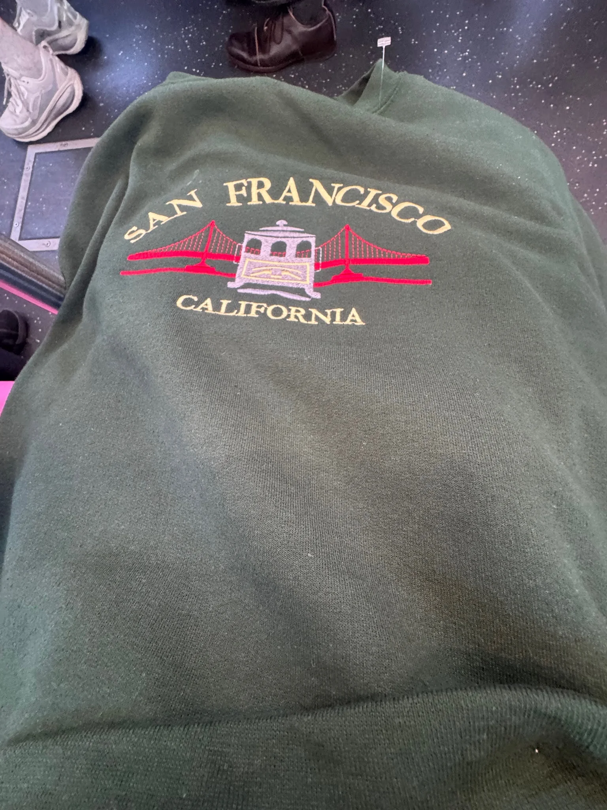
She got me this very nice SF sweater! The thoughtfulness of the gesture coupled with the spontaneity really touched me!
As we were leaving my apartment we had a brief flyby from “The Raja of Rhythm”. I then parted ways with her and walked towards karaoke over by Union Square. About a block away a traveler asked me for help so for the second time today I helped walk someone to their destination which tickled me. This traveler happened to come from Vienna which made me wonder if she knew “The Professor”. I was going to ask but I don’t think her English was quite good enough to understand exactly what I was saying and she answered some different but tangentially related questions instead.
I got to karaoke at Pandora with “The Philosopher,” “Hell yeah,” “The Quant,” “The Foxy lady,” “Not Misinformed,” “The Writer,” “The Awepartment,” “The Trivial Pursuit,” and most important to this “Sergeant Sassy”. This whole event came about because she read a previous newsletter and said she wanted to see me do WAP so here we are. True to form this time I was immediately asked to kick off with WAP which I did quite well. According to the esteemed Sergeant herself “I’m not sure what I was expecting but this exceeds expectations”. I’m glad I was able to make up for last time where I turned tail and backed down after two lines. I also discovered I really liked doing the song airplanes. One trick they don’t always tell you about in karaoke is that you can riff and change the lyrics a bit. For example when the original went “airplanes in the night sky … I could really use a a wish right now wish right now”
I replaced it with “I could really use a 9-11 right now 9-11 right now”.
I also did not like us which in hindsight was quite the risky choice because of how many times the n word is dropped. Despite my best attempts to avoid it I did wind up saying it twice throughout the song which in terms of total times it’s said gets me 90%+ avoidance rate but I’m not sure if the morality please looks more at that or just the binary of whether I said it or not. I fear this may cancel out the good karma I got from helping the Chinese lady from earlier.
While the karaoking was at full swing me, “The Philosopher,” and “The Awepartment” went to the bar to get a drink. We were talking with the bartender there for a little while and “The Philosopher” joked to the bartender that I was 43 which she believed and then ran with reminiscing about how different life was in the 80s. I made up some stuff about being really good at mortal combat and smash on the n64 which she bought. I told her I’m trying to stay up to date on all the slang like brainrot slippery toilet rizz. She mentioned she hadn’t been keeping up as much and I encouraged her as a fellow 40 year old to keep up.
Before leaving I ordered a nonalcoholic IPA at the request of the other two and I have to say it tasted like the bees knees. Sorry I think I got that expression wrong, what I meant to say is it tasted like bees stinging me in my fucking knees because it tasted like Satans sourly sock drawer. My goodness it was awful. Throughout the karaoke session I continued to nurse the venerable vomit until it eventually finished. I made no shortage of funny faces throughout the IPA incident which no doubt gave away my not so subtle dislike for them.
After leaving karaoke “The Foxy lady” expressed interested in seeing “The Awepartment’s” place since I talked about it in previous episodes which led to me, “The Foxy lady,” “Not misinformed,” “The Philosopher” and “The Awepartment” heading over there. From “The Foxy lady’s” reaction I think it lived up to her expectations :D. Also at the same event “The Writer” expressed an interest in seeing it as well which means this newsletter may covertly just be an apartment advertisement and I am ok with this. Maybe “The Awepartment” could charge for tours and I get a cut.
Then me, “The Philosopher,” and “The Awepartment” scoped out a new bar for Thursday bar night called the Shipyard Saloon. We got there and I ordered another nonalcoholic IPA for the bit which was exactly as terrible as the first one except I managed to down it faster which felt like progress. We did a bit where I pretended to be “The Philosopher’s” son which the bartender played along with.
At this point it was 2 in the morning and me and “The Philosopher” agreed to meet “The Awepartment” at his place to go on a hike at 7. I walk “The Philosopher” home and it’s now 3 in the morning. I try to call an Uber only to find that it’s $40 so I crash on “The Philosopher’s” couch which I think unlocks a new level of friendship. We crash for 3 hours and then head over for the hike.
For this hike we do San Bruno Mountain. Joining the 3 of us are some of “The Awepartment’s” old work friends from a place called Verkada. I haven’t worked there myself but from what I’ve been told this sounds like a mixture of an engineering business and a college fraternity. If I get to the point where I make enough money that I don’t need to work at all I would try to work there for a month just to see what it’s like. If I fail to go there I may try for a company known as Serval which from what I hear is Verkada++.
The hike itself was pretty easy. The last time I went up to San Bruno Mountain I went down a somewhat sketchy cliff face, this time I followed the ancient strategy of going back the way I came and it was a cakewalk. Afterwards we went to San Mateo for brunch where I got some pretty good Wagyu.
Unfortunately I mistimed the hike and had to miss pickup soccer. Who knows maybe this is the game that our pickup team PTSD finally won. I’m imagining “The Big YT short” personally got 5 goals in this game.
Later in the day I went to a birthday party for “The Foxy lady”. It was swag themed which I think was meant to represent the party rock 2012 esque swag style. To be honest I didn’t really know what to do for that so I went to a thrift store and bought a hat like this
As soon as I walked in, some of the hosts immediately asked if I was Humza. I was surprised they figured it out so quickly and it turns out “The Foxy Lady” had told them quite a bit about me including my newsletter. I made a birthday card as per usual which looked a little something like this
Sunday
Today “The Yogi” came over to my apartment and helped me with a bunch of fashion stuff. She said she wanted to go through my whole wardrobe and see what we wanted to keep and get rid of before we go shopping for new clothes.
This is going to be the first in a multi part series where “The Yogi” does a wholesale revamp of my wardrobe so that I have no choice but to be fashionable.
After trying on pretty much every shirt, pair of pants, and jacket we found quite a bit to get rid of
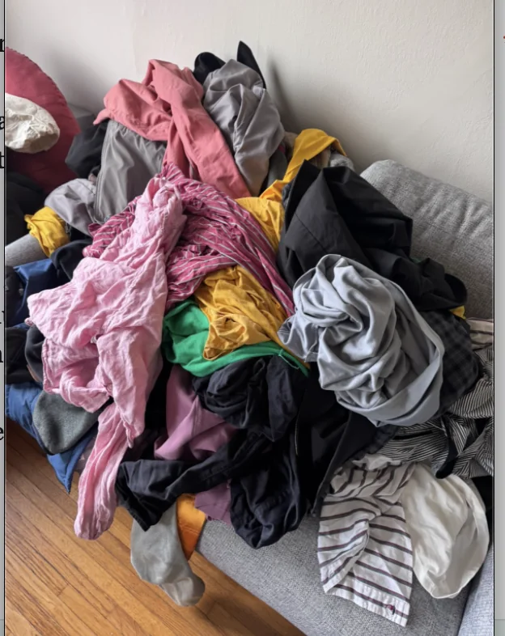
Some of this was stuff I had in my closet for years and haven’t worn in a long long time. Others were things that I realized weren’t helping me on the fashion journey and needed to be discarded even if I still wore them.
After a break for lunch we went to Sport’s basement to try to find some new clothes. We didn’t find anything worth buying but we gained information on what sort of stuff made sense. This is more a trip to lay the groundwork rather than making big moves.
From there we went to the Folsom Street fair to meet up with “The Quant”. He really wanted to check this out before he left in SF and didn’t want to go all alone so I obliged and checked it out with him and “The Yogi”. For those who are unaware of what this is, it's essentially one big BDSM / body positivity festival. There were furries, people getting BJs, spanking, and more. To be honest it wasn’t really my scene but sometimes you gotta do what you gotta do. “The Quant” suggested I go blindfolded and he lead me around but I realized that might give some people the wrong idea.
Then me and “The Yogi” headed to “The Raja of Rhythm’s” place to lay the groundwork for a surprise party. “The Filmmaker” is moving away to NYC to pursue his dreams of being an NYC man and so I thought it would be fun to throw a surprise party for him. Originally I wanted to do it at a restaurant “The Filmmaker” wanted to go to but due to “The Filmmaker’s” popularity we couldn’t fit all the people we wanted to invite so we decided to use “The Raja of Rhythm’s” rooftop instead.
People started trickling in as we waited for “The Filmmaker” to arrive. “The Raja of Rhythm” was out keeping him busy until it was time to lead him back to the surprise. Originally they were also at the Folsom street fair and I was expecting them to come back down to the Mission where this was all happening.
I was tracking “The Filmmaker’s” location and saw him at a park in North beach which was a bit funny. It turns out he really wanted to see this park and since we couldn’t tell him we wanted him back here for the surprise we waited for him to return which turned into a fun game of predicting when he would come back.
As they were making their way back it turns out the traffic on South Van Ness street was really bad because of the Folsom street fair so I watched on my phone as the live location inched forward over a 10 minute period. When they got back some more people were still coming up for the surprise so we had “The Raja of Rhythm" stall at the last second by saying he really had to go to the corner store nearby which bought us enough time for everyone to come up to the rooftop.
He comes up and we all surprise him and it is amazing and lovely! He did not see it coming and was very happy that we all showed up for him.
It really was nice seeing everyone hanging out and having a good time like this. Thanks to “The Raja of Rhythm” for cohosting this, offering your apartment and keeping “The Filmmaker” busy, thanks to everyone who showed up and supported our boi, and finally big props to “The Filmmaker”. I told you this over text but I’m really impressed by the way you’ve gone out and chased all the dreams you’ve had including working at your dream company, making your movie, and now moving to your dream city! I remember all the times you’ve worked towards these things which makes it all the more gratifying to see come to fruition. We’re all really gonna miss ya man!
I dipped from the party after a bit to work on a skill of my own being steak cooking with two of my finest Steakers being “The Philosopher” and “The Juggler”. We meet at a nearby Gus’ where “The Juggler” walks me through some of the different cuts of meat that I could get. He says for steaks the big 3 are Filet Mignon, Ribeye, and New York steak. I wind up going with the Ribeye and some lamb shoulder. After getting the meat I think we are good to go but APPARENTLY we need a vegetable according to the other two. I get a single eggplant but NO apparently we need more vegetables including a bellpepper and worst of all a broccolini which I will expound upon more later.
We go to “The Juggler’s” place to cook up the steak. We go for what’s known as a reverse sear method where after seasoning the steak you put it in the oven and then you sear it as opposed to doing the opposite which is a traditional sear. I then have to cut up all the vegetables which is my first time cutting since I cut my finger a few weeks back. Thankfully no Humza’s were hurt in the cutting of the vegetables and I cut them up albeit apparently with more work than what was really needed.
The steak itself is quite easy to cook. It's mainly just seeing if the meat is ready by poking it while it’s in the oven and then searing it. The worst part is PLATING it. See apparently for a date night it’s not good enough to just have a nicely cooked steak on a plate, apparently you need to cut it up into “AESTHETIC” pieces. I tried and apparently mine wasn’t good enough. I had to neatly cut up the steak and fan it out over the plate. Personally I don’t see why this matters since it all goes in my mouth anyway. Do y’all remember the scene in old yeller where they put the dog in a really nice outfit before going out back to shoot him? No? Me neither!
Also remember those vegetables I alluded to earlier? I have to eat them, which is a bit unfortunate. I learned broccolini is like broccoli but worse. Granted it wasn’t as bad as the IPAs (not by a long shot) but imagine you go to all the trouble to cook up some nice steak and its great and suddenly you also have to eat this vegetable. Broccoli is worse than broccoli and I cannot be convinced otherwise. It made my tastebuds feel like they were being kicked in their balls.
BUT THE STEAK WAS GREAT. EXCELLENT. It made it all worth it.
Ok jokes aside here I can see why plating is important for a date night but I do have a hard time reconciling it with my own intrinsic lack of interest in plating food. I never really understood why people care about that at restaurants. I know some people have really gone gaga over this. But “The Philosopher” did make a good point that if I want to be the best version of myself, these things will help since people do care about this which I guess means I have to. I’ve tackled tougher challenges in my life, I’m sure I can tackle the plating demon.
After dinner was cooked we watched Stand by Me which was an adaptation of Stephen King’s novella “The Body”. I was familiar with the book so the movie wasn’t too new, but I did have to deal with the challenge of “The Philosopher” trying to poke me in the rib whenever I dozed off. For now this is more effective than the spray bottle at keeping me awake but I’ll find a way to overcome it!
Personal training progress for the week
The dot plots below show every exercise logged through 9/24/2026; later dates are excluded. The x-axis is time, the y-axis is logged weight, and dot size represents reps or logged time. Bodyweight sets appear on the BW baseline.


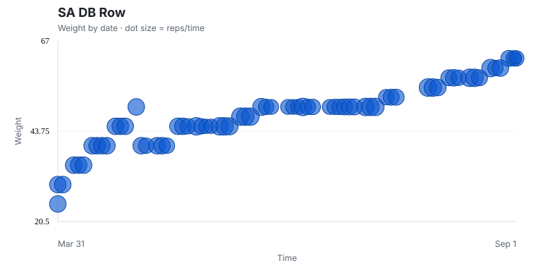

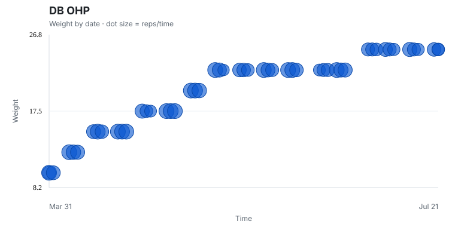
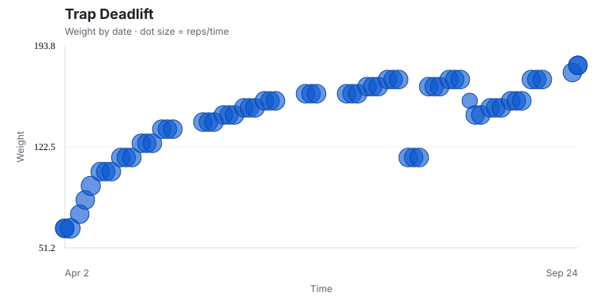


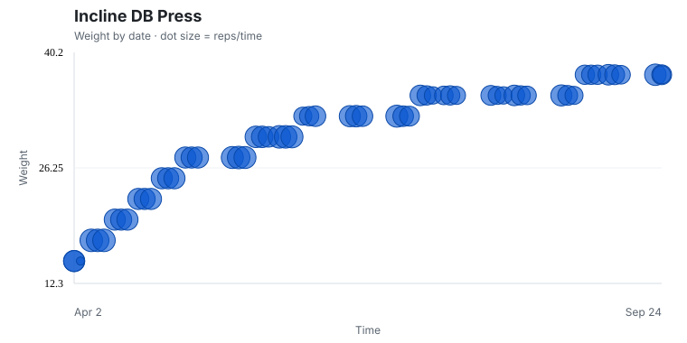
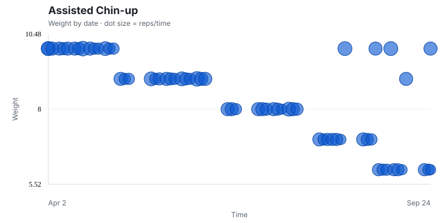
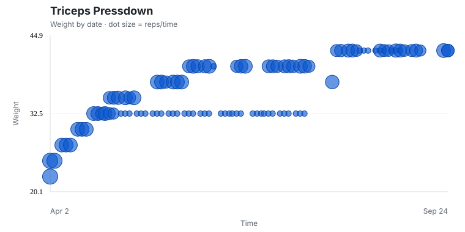
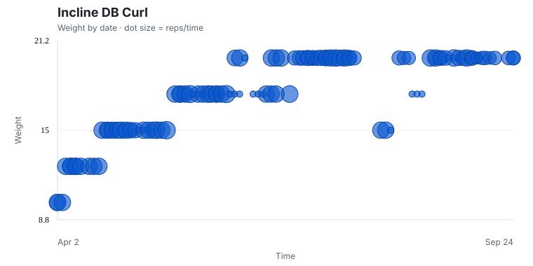
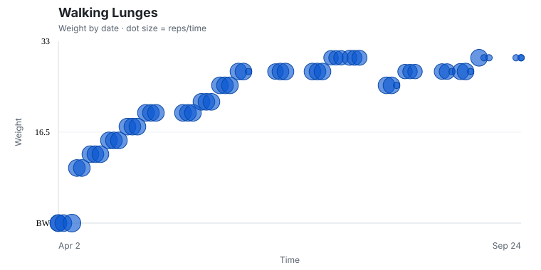

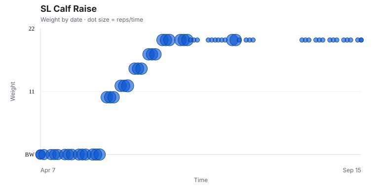
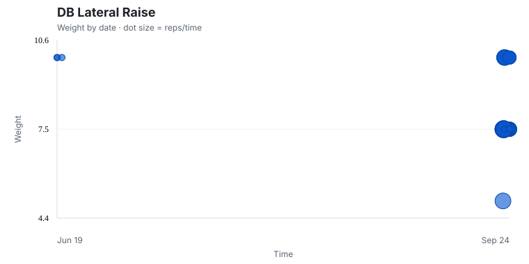

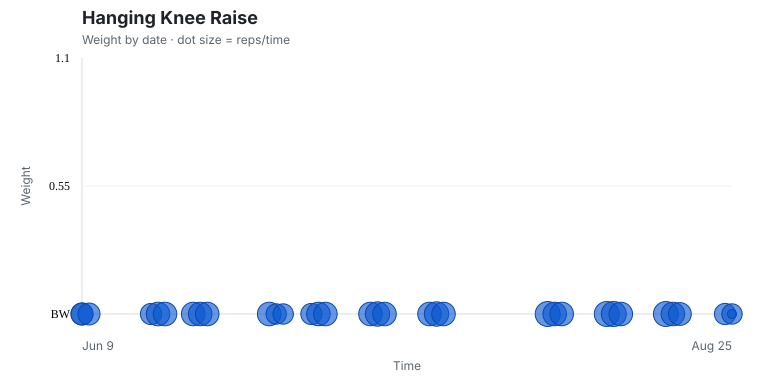

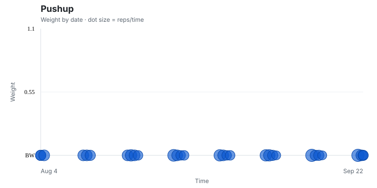
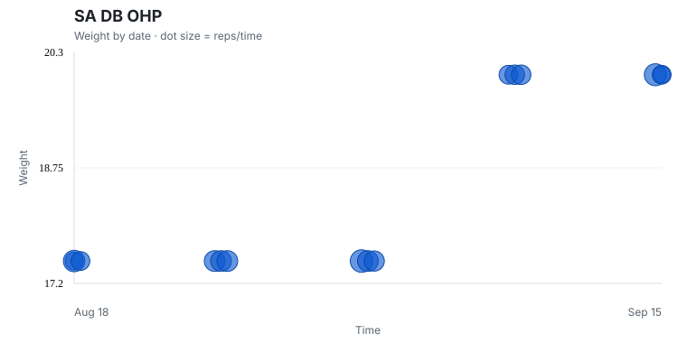
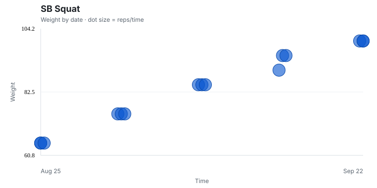

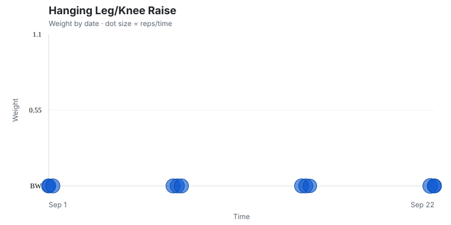
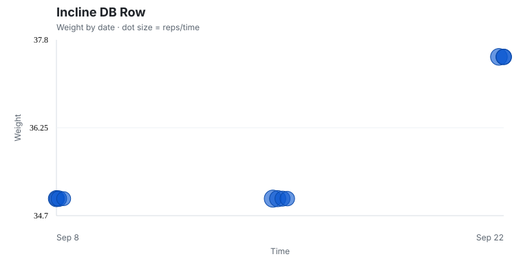
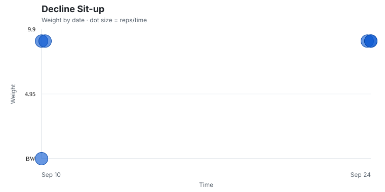